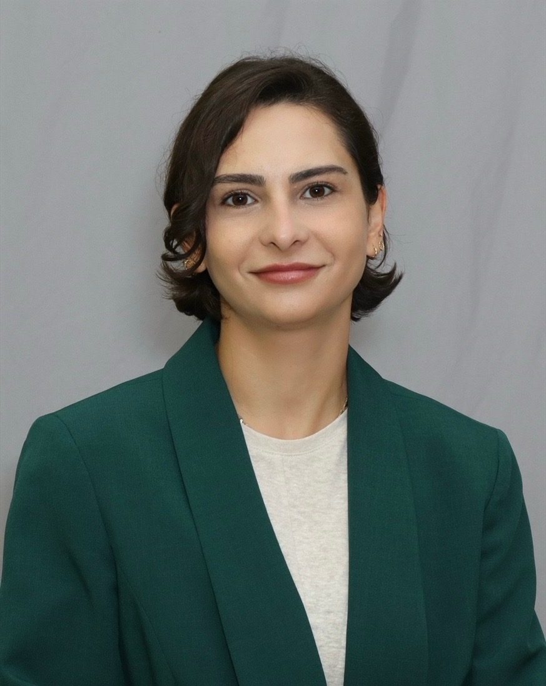

Computational scientist investigating chemical–biological interactions, endocrine disruption, environmental contaminants, and mechanisms of toxicity through molecular modeling and data-driven approaches.
View CV Publications ContactI am a PhD candidate in Computational Physical Chemistry at Michigan State University, specializing in molecular modeling, molecular dynamics simulations, enhanced sampling, and structure-based analysis of small molecule–protein interactions. My research integrates computational chemistry with toxicological questions to investigate how chemicals interact with molecular targets and contribute to adverse biological outcomes.
My research has increasingly focused on computational toxicology and environmental health, particularly the molecular mechanisms underlying endocrine disruption by environmental contaminants. A major focus of my work is per- and polyfluoroalkyl substances (PFAS), for which I investigate interactions with nuclear receptors across aquatic species using molecular docking, molecular dynamics, free-energy calculations, and structure-based analyses.
I am also interested in chemical mixtures, species-specific molecular responses, chemical structure–activity relationships, and the mechanisms through which environmental chemicals may perturb biological pathways. These studies aim to generate mechanistic insights that can inform toxicological evaluation and environmental chemical safety assessment.
In parallel, I have contributed to structure-based drug discovery projects involving Mycobacterium tuberculosis targets and GPCRs. These projects have provided experience in molecular docking, pharmacophore modeling, fragment-based approaches, and molecular dynamics simulations.
My broader research goal is to bridge molecular-level computational approaches with experimental and systems-level toxicology. I am particularly interested in New Approach Methodologies (NAMs), Adverse Outcome Pathways (AOPs), and integrating mechanistic information with biological data to support predictive toxicology and regulatory-relevant chemical risk assessment.
Computational investigation of PFAS interactions with the ecdysone receptor, examining molecular recognition, binding behavior, and potential implications for endocrine disruption.
Computational investigation of PFAS interactions with estrogen and androgen receptors to characterize potential mechanisms relevant to aquatic toxicity.
Molecular modeling of PFAS interactions with estrogen receptors and investigation of potential estrogenic activity in rainbow trout.
Computational and experimental investigation of chemical interactions associated with estrogenic activity.
Molecular docking, molecular dynamics, and computational characterization of ligand–target interactions.
Structure-based modeling and computational screening of potential therapeutic compounds.
In review.
In preparation.
In preparation.
Graduate Teaching Assistant – Physical Chemistry I
Michigan State University, East Lansing, MI, USA
Graduate Teaching Assistant – General Chemistry Laboratory
Michigan State University, East Lansing, MI, USA
High School Chemistry Teacher
English Academy, Mount Lebanon, Lebanon